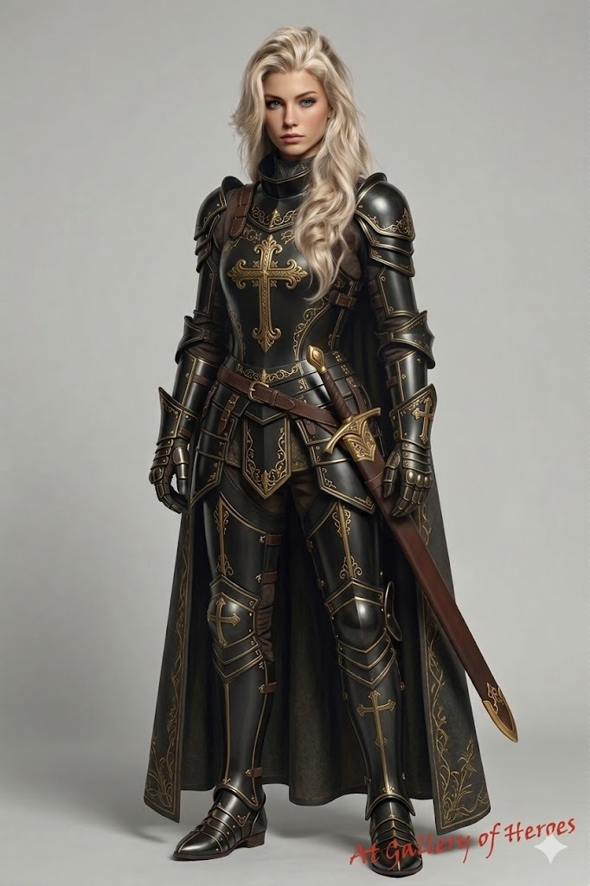

- Nome: Shen Yue (沈月) / Li Qin (李沁)
- Idade: 29 anos
- Altura: 1,67m
- Peso: 62 kg
- Raça: Humana
- Classe: Guerreira / Monge
Nascida em Qishan no reino de Yun Meng, em Haishi, foi batizada de Li Qin por seus pais. Seu pai, Li Ni, era ministro dos ritos e conselheiro do Imperador, já sua mãe, Cui Ying, era capitã do exército e filha do general Cui Yi.
Descendia de uma família separada em três clãs, (Os Li; Cui e Shen), protetores do Senhor dos Destinos. Os Três Grandes Clãs eram como galhos formando uma só árvore. A Linhagem Perdida do Príncipe Iluminado.
Li Ni e Cui Ying eram apaixonados desde novos e pediram à divindade dos destinos que unisse seus caminhos para que eles pudessem ficar juntos. Assim foi feito. Viveram anos tranquilos e felizes, até que, quando Li Qin tinha oito anos, assassinos invadiram a mansão de sua família e matou todos, mesmo os servos e os animais não foram poupados.
Sua mãe a protegeu, fugindo pelos fundos em uma parte quebrada do muro, entregando a própria espada e o medalhão de Li Ni, enquanto ela própria servia de obstáculo para que a filha fugisse, pediu que a menina encontrasse o Templo Escondido nas montanhas.
A pequena Li Qin andou, se esgueirando em meio aos bosques e florestas, seguindo seu coração, encontrou o Templo, onde Cui Yi e Li Jinbao (avô materno e avô paterno, respectivamente) eram monges no templo. Abrigaram e cuidaram dela. Os dois desconfiavam de uma conspiração e deram a ela um novo nome para esconder sua identidade. Da dor e da morte, enterrou Li Qin junto com os pais, renascendo como a guerreira Shen Yue.
Por dois anos, ela continuou seu treinamento, com uma rotina rigorosa, aprendeu a ser disciplinada e centrada, além de resistente, física, mental e espiritual. Quando aos dez anos, enfrentou o desastre novamente: inimigos invadiram o Templo, seus mentores a impediram de lutar, mandando-a fugir, dando a espada que pertencia ao clã de sua mãe e o cordão com um pingente que representava Adongolarof que pertencia ao clã de seu pai. Yue obedeceu, correndo para longe, contudo estava perto o bastante para ver uma explosão destruir o Templo
Ela andou, desnorteada, por um tempo, até que foi sequestrada por vendedores de escravos, que atravessaram com ela para o outro lado do mundo.
Enquanto atravessavam uma floresta, Yue viu a oportunidade perfeita de fuga, um descuido de seus algozes, ela foge levando consigo a espada de sua mãe. Contudo o local era desconhecido, se perdeu na floresta. Até seu corpo ceder
Quando acordou, estava na cidade de Sean Bayle. Um elfo chamado Virion a encontrou e a levou para ser tratada. Yue era muito fechada e não compartilhou detalhes de sua vida, e o senhor da cidade a tolerava por causa da esposa e de sua filha, Reannon, que insistiram para deixar ela ficar. Yue e Reannon se tornaram inseparáveis. Uma confiança inquebrável. Yue acompanhou de perto as intrigas familiares e segredos de Reannon, tornando a ligação entre as duas ainda mais forte. Mesmo quando seguiram por caminhos opostos e passaram alguns anos separadas. Nesse período se aproximou de Bran - no qual não gostava muito no início -, porém, o amor de ambos por Reannon estreitou o laço de amizade deles.
Anos depois, descobriu que o responsável por trás dos atentados que a fez perder a familia era um homem conhecido no submundo como Rei Dragão. Contudo, suas investigações não a levaram mais perto de sua vingança. Frustrada, ficou um tempo em uma vila, refletindo seu próximo passo. Por conveniência do destino, seu caminho se cruzou com de Reannon e Virion novamente, seguindo com eles para a cidade portuária de Warback.

- Nome: Reannon Velaryon
- Idade: 23 anos
- Altura: 1,65m
- Peso: 58 kg
- Raça: Meio-elfo
- Classe: Sacerdotisa
Reannon Velaryon nasceu no reino de Fearannoir, filha do arqueduque Hideon Velaryon e da duquesa Ayla Velaryon.
Reannon é uma princesa, sétima na linha de sucessão. Por ser quem era e carregar um nome importante, seu pai queria forçar um casamento com outro nobre, a fim de estabelecer alianças.
Porém, Reannon nunca gostou dessa escolha de vida; sentia-se presa desde pequena. Sempre foi protegida e cuidada por Viron, seu professor e tutor. Foi ele quem a ensinou a ler, escrever e outras coisas básicas que um nobre precisa saber.
Durante a infância, ela conheceu Yue, sua irmã não de sangue, mas de coração. Reannon é capaz de fazer qualquer coisa por ela. A amizade das duas cresceu na infância e se tornou muito forte.
Também foi na infância que ela conheceu seu grande amor, um jovem escudeiro chamado Bran.
Com o passar do tempo e após diversos pedidos de Ayla, Hideon, seu pai, cedeu para que Reannon tivesse treinamento marcial. Para isso, foi escolhido um cavaleiro membro de uma ordem sacerdotal. Seu nome era Thomas Turner.
Ele ensinou Reannon a brandir uma espada de forma adequada. Embora não fosse dotada de grande força física, ela era bastante ágil para a idade. Não era tão rápida quanto Yue, mas sua agilidade era perceptível.
Pouco tempo depois, Thomas Turner convidou Reannon para conhecer sua ordem: o templo do grande deus Mahal Uznull. A jovem princesa aceitou o convite. A visita ao templo foi magnífica; Reannon ficou encantada.
Porém, na volta, a caravana foi atacada por orcs. A batalha seguiu violenta até que um deles avançou em direção a Reannon. Ela ergueu a espada para se defender e, em poucos segundos, o orc se transformou em um demônio de voz feminina.
Essa criatura sabia exatamente quem ela era. No momento em que Reannon seria morta, Mahal Uznull intercedeu, enviando um anjo protetor que, com um golpe de espada flamejante, fez o demônio fugir.
Após isso, Reannon recebeu o título de consagrada. Com esse feito, decidiu seguir o caminho do sacerdócio. Era uma oportunidade de sair da prisão que seu pai queria lhe impor e, ao mesmo tempo, fazer algo de bom em sua vida e ajudar outras pessoas.
Foi muito duro para ela deixar Yue e seguir para a ordem, e mais difícil ainda foi se despedir de Bran. Porém, era algo necessário.
Reannon entrou para a Ordem dos Guardiões do Abismo, onde treinou, se destacou e começou a realizar milagres, mostrando que sua força espiritual era muito grande e que sua capacidade mágica era extremamente poderosa, tornando-se uma peça muito importante dentro da ordem.
Reannon faleceu na batalha contra o demônio Balzhar, em Fearannoir, vítima de envenenamento causado pelo Anjo da Morte. A sacerdotisa, que havia vencido a batalha, veio a morrer minutos depois, diante de seus amigos. Posteriormente, foi canonizada como Santa Reannon, e seu feito se tornou um marco histórico em Fearannoir.